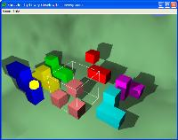
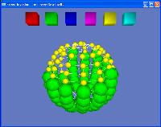

| | The Freed SeriesThe Freed Series is a collection of games with the common theme of taking a normal 2d game and seeing how it expands into the 3D realm, that is to say you have 'freed' them from their 2 dimensional confinement. You can think of most board games being playing on a standard flat 'board', well what if you took that board and twisted and contored it, into a sphere or a mobius strip? How does this affect game play? Really what it comes down to a fresh twist to some classic games, breathing a rush of new excitement into you the player. Enjoy. A 3D block building puzzle where you cannot see the blocks but only their shadows. This means you'll have to keep a strong mental understanding of the blocks and how they fit together. A great brain buster.
It is part of the Freed Series because it has been freed of the traditional need for visability in block puzzles. |  |
| Lets you play the game of Go on many different boards including a Sphere, a Torus, a Mobius Strip or on numerous flat fields but with 3, 5 or 6 neighbors. This is a very fun and interesting twist to the standard game of Go and should keep you entertained for a long time. |  |
| Extends the classic puzzle game 'Color Invasion' into the world of 3d with all the interesting boards found in Freed Go. Essentially it's a fun puzzle game which draws you in and soon has you hooked. |  |
|